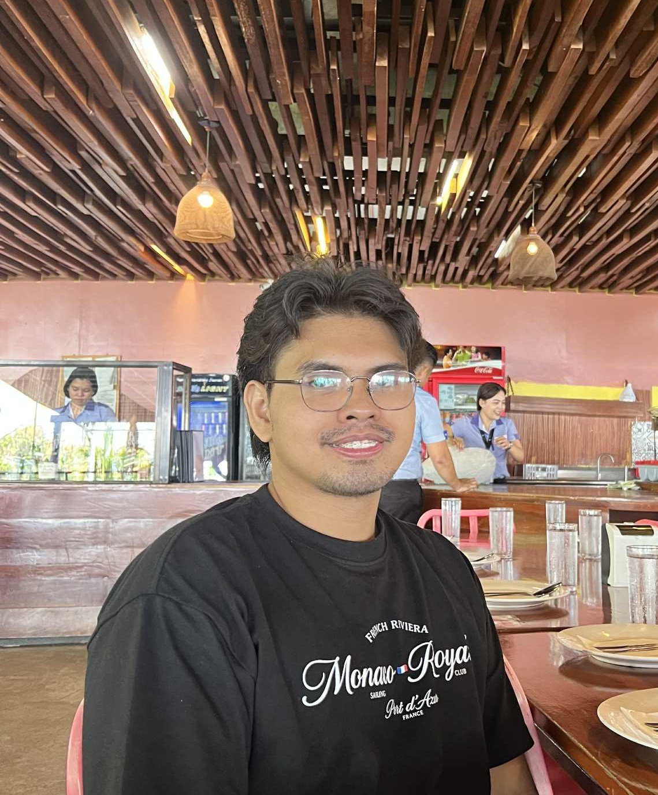

Information Technology Student
Cagayan de Oro City, Philippines

My name is Vince Jaliel Z. Balaman, an Information Technology student at the University of Science and Technology of Southern Philippines (USTP). I am passionate in learning about cybersecurity, data management, and software engineering. My academic journey so far has equipped me with the skills to build full-stack applications and design complex database architectures with assistance from my professors and peers as well as external resources and from our courses. I am also technically proficient in networking (CCNA) and modern software stacks, with a proven track record of collaborating on AI-integrated accessibility projects, web based hospital management systems, and some mobile application development on the side.
University of Science and Technology of Southern Philippines (USTP)